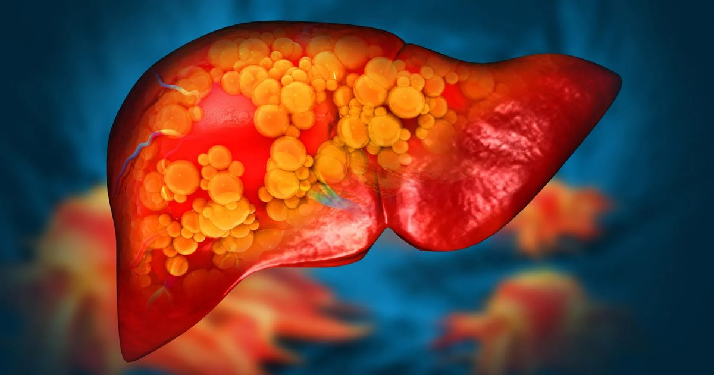

Новый препарат обращает вспять тяжелую жировую болезнь печени, восстанавливая кишечник
Ученые обнаружили, что потенциально новый препарат может обратить вспять тяжелую жировую болезнь печени на животных моделях, восстанавливая здоровье кишечника и блокируя попадание вредных веществ в печень.
Этот прорыв может проложить путь к новым методам лечения заболеваний печени и, возможно, других серьезных заболеваний, включая сердечно-сосудистые заболевания.